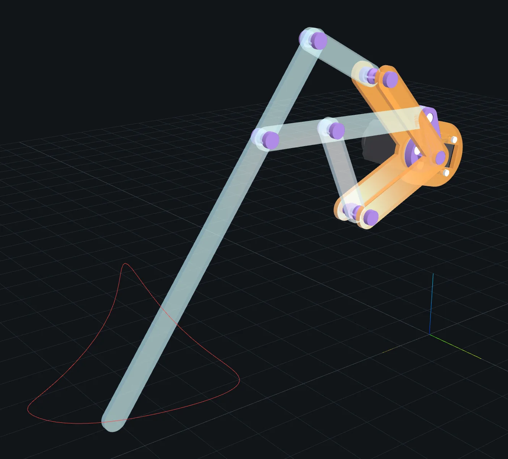
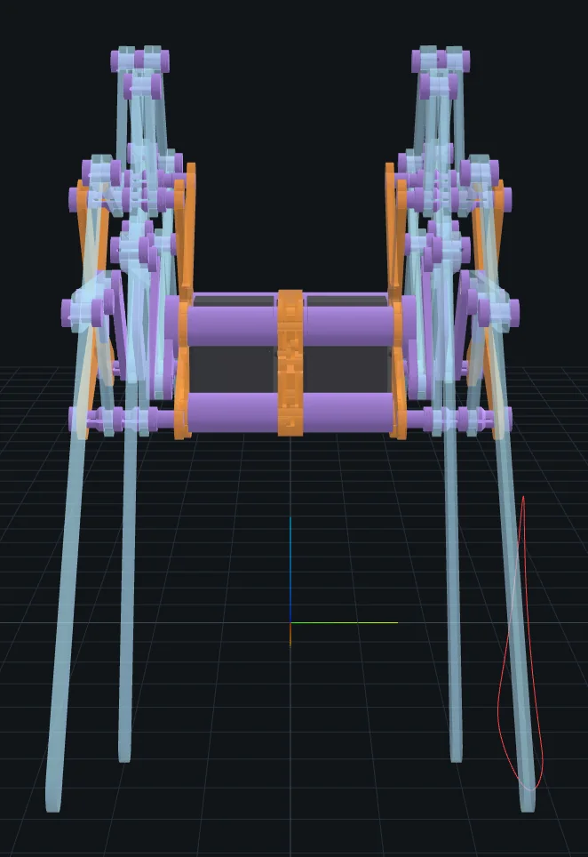
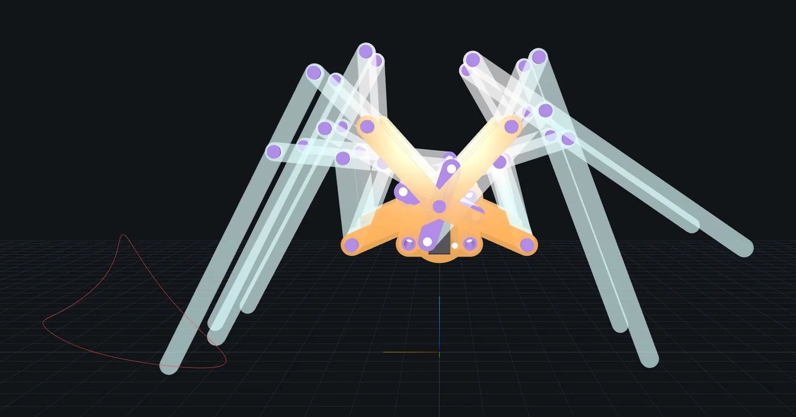

About this report
Who it is for. An engineer who reads Python, has never opened this repository and has never designed a walking machine. After reading it you should be able to explain what the system does from end to end, find the code for any part of it, say what it can and cannot do, and know where its risks are.
How to read it. Sections 1 to 3 orient you: what the project is, the mechanical and software background, and the pipeline at a glance. Sections 4 to 7 follow one design through the pipeline, a stage at a time. Section 8 covers how a design is seen and judged, and section 9 the interface built for AI agents and the command line. Sections 10 to 12 assess the project: how quality is kept, where the time goes, and what it can't do or might get wrong. Section 13 says where to start. The appendices are for looking things up.
The running example. One design runs through the whole report: the default, a robot
built on the Klann linkage with four legs on each side. It is what spiderpig build makes
with no options. When the default can't show a point (it never fails to plan, for
example), another design stands in, and the text names it.
The numbers were measured at 97bec2d unless marked "(project docs)", meaning they
come from the repository's own reports. Timings are indicative; Appendix C says how they
were taken.
1. What spiderpig is
You name a linkage (Klann, Jansen, Strider and others) and make a handful of choices: how many legs a side, which servo motor, what sheet material, what kind of axle. spiderpig answers with what a maker needs:
- laser-cutting files (DXF), packed onto sheets and corrected for the width of the laser's cut;
- 3D-printing files (STL): one per distinct printed part, with quantities;
- a bill of materials with vendors, pack sizes and prices;
- the whole assembly as STEP (for CAD programs) and STL;
- an animated 3D model for a browser viewer (a binary glTF file,
.glb); - a physics model for the MuJoCo simulator (MJCF);
- reports on every stage: did it pass, how thick is each side of the robot, how is it expected to walk, what does it weigh and cost.
Section 2.6 explains each of these formats and tools.
It behaves like a compiler. The input is a design. The output is either the files, or an error that names the stage that failed and gives the numbers behind the failure. Where a fix exists, the error also proposes it, and the fix has already been checked by running the failed stage again with it.
The central promise is that designs are correct by construction: no two parts of a side collide anywhere in the crank's turn. This promise has a history. On 2026-09-29 an audit of the earlier code found every test passing while no design could physically be built: two links shared a plane and collided for 13.6 % of every turn, and a foot link silently dropped out of the cutting files. The answer was to share out space before any part exists (section 5) and then check that each part stays inside its share (section 6). The first half is a sound geometric bound over the whole turn; the second is checked at a few crank angles, as is the chassis that joins the two sides, and section 6.3 says what that leaves open.
There are three ways to drive it, all calling one engine, and a browser viewer for looking at the result:
- a command line,
spiderpig <command>(build,bake,explain,auditand six more); - a Python API,
spiderpig.api, designed for AI agents: a validated JSON spec goes in, typed reports come out, and an agent can reach the live CAD solids and edit them; - an MCP server that offers the same operations to AI agents speaking the Model Context Protocol.
It does not write firmware or a gait controller for the servos. It does no strength analysis of the parts. It does not invent mechanisms: every linkage is a program in its catalog, and every part follows fixed construction rules.
In numbers:
| measure | value |
|---|---|
Python package spiderpig/ |
25,607 lines in 85 Python files |
| tests | 9,122 lines; 901 tests |
| browser viewer (TypeScript) | 1,538 lines |
| linkages in the catalog | 28: 17 walkers and 11 mechanisms |
| history | 232 commits: 2015 coursework, rebuilt almost entirely in September 2026 (Appendix C) |
Following a design through the code needs a few mechanical ideas and a few tools. Section 2 gives them.
2. Background: walking machines in ten minutes
This section introduces the ideas the rest of the report depends on: linkages, legs and
robots, how a flat-built robot is layered, and the software underneath. Where the code has
its own name for something, the name follows in monospace.
2.1 Linkages
A linkage is a set of rigid bars, the links, joined by pins so that two joined links can only rotate about their pin. In a planar linkage every link moves in parallel planes, so the whole motion can be drawn in two dimensions. Every machine spiderpig builds is planar. The code draws linkages with x along the walking direction and y up; z, across the robot, is left for the layers of section 2.4.
One body doesn't move: the frame (torso). It carries the fixed pivots. A motor
turns the crank, a short bar that rotates fully about one fixed pivot, the crank
centre (always O, at the origin). The moving end of the crank is the crankpin, and
a link pivoted on it, dragged round by it, is a crank rider. The crank angle is the
linkage's input; every other joint moves as a function of it. In the code the crank angle
is t, in radians.
The other links come in a few kinds. A rocker is pivoted on the frame and swings back and forth without turning fully. A coupler hangs between moving joints, attached to neither the frame nor the motor, and points on it trace closed curves as the crank turns. A walking leg is a linkage designed so that one point, the foot, traces a loop whose bottom stays low and nearly straight. Along the bottom the foot is on the ground and moves backwards, pushing the robot forwards (the stance); then it lifts and swings forward over the top of the loop (the swing). The loop is the foot path.
Each joint of a linkage is found the way you would draw it with a compass: it lies at given distances from two joints already placed, so it sits where two circles cross. Two circles cross at two points, and the design says which one to take (the branch). Each such joint closes a loop, a closed chain of bars such as O–M–C–A in the figure below. If, at some crank angle, the two known joints move farther apart than the two bars can reach, the circles stop crossing and the linkage can't assemble there. The transmission angle at a joint is the angle between the two bars that meet there. Near 0° or 180° the joint is close to locking (toggle) and the motor can barely drive it. A good design keeps every loop well clear of both failures over the whole turn.
As the crank turns, the foot runs clockwise round its path in this view: right to left along the bottom on the ground, then up and forward, left to right, over the top. At about t = 217° the crank rider b1 lies right across O, and for about a quarter of the turn it is within 13 mm of it; section 2.4 explains why that matters.
2.2 The linkage catalog
The linkage catalog holds 17 walkers in six families:
- Klann (Joe Klann's US patent 6,260,862): six bars and two fixed pivots, as in Figure
- It lifts its foot high. It is the project's default; the catalog also has four variants transcribed from published drawings.
- Jansen (Theo Jansen's Strandbeest): eight bars and one fixed pivot. Its stance is long, flat and smooth, and it lifts its foot little.
- Strider (Wade and Ben Vagle, diywalkers.com): one "leg" is a coupled, mirror-symmetric pair with two feet.
- TrotBot (also from diywalkers.com): eight bars, plus versions with a heel (ten bars, two feet) and a retractable toe (twelve bars, three feet).
- Four-bar: the simplest walker, from diywalkers.com, including the legs of a LEGO walker called Spot Micro.
- Six-bar: the four-bar with its rocker extended, in four versions.
The catalog also holds 11 mechanisms. They are not walkers but building blocks with a promised output: a point that moves in a straight line (Hoekens, Watt, Peaucellier), a platform that lifts without tilting, a rocker that swings a fixed angle or pauses. A mechanism declares its output and its promises ("straight to within 0.05 mm over this part of the turn", "never rotates", "pauses for at least 120°"), and the pipeline holds it to them. One of them, the five-bar, has two inputs and so needs two motors; spiderpig accepts it as a design but can't build it (section 6.2).
2.3 From one leg to a robot
A leg is one copy of a linkage with two settings. Its phase is an offset added to the crank angle: a leg at phase φ is where the basic leg would be at angle t + φ. Legs are spread across the turn so that, at every moment, some feet are on the ground while others swing forward. A robot walks only if its feet take turns like this.
A leg's orientation is +1 (as drawn) or −1 (mirrored). A mirrored leg is the drawing flipped about the vertical axis (x → −x), evaluated at crank angle π − (t + φ). Flipping x and replacing the angle t by π − t sends the crankpin (r cos t, r sin t) to (−r cos(π − t), r sin(π − t)) = (r cos t, r sin t): the same place. So a mirrored leg rides the same crank, turning the same way, while facing backwards.
A module is a named set of legs driven by one crank. There are four:
| module | legs (orientation, phase) | what it is |
|---|---|---|
single |
(+1, 0°) | one leg |
double |
(+1, 0°), (−1, 0°) | a mirrored pair on one crankpin |
decker |
(+1, 0°), (+1, 90°) | two legs a quarter turn apart (as in double-decker) |
quad |
(+1, 0°), (−1, 180°), (+1, 90°), (−1, 270°) | a decker plus a mirrored decker half a turn later |
A side is one module on one crank, driven by one servo, between two frame plates.
A walking robot has two sides, the right side a mirror image of the left across the
robot's mid-plane (z → −z), with their servos back to back on a chassis. The running
example, a Klann quad, therefore has eight legs and two servos. It steers by turning the
two servos at different speeds.
Two different mirrors appear here and are easy to confuse. A mirrored leg is flipped
front to back and stays on its own side. The right side is the whole left side reflected
across the mid-plane. And module names count legs per side, so quad is an eight-legged
robot.
2.4 Building it flat
The robot is built from flat parts. Each link is a plate cut from 3 mm sheet (acrylic by default): a bar 12 mm wide with rounded ends, following the line between its joints. Because the mechanism is planar, two links can only pass each other if they lie in different planes. So each side is a stack of layers, each one sheet thick. Every link lives in one layer, and two links whose outlines come close at any point of the turn must be in different layers. The bottom layer (index 0) is the outer frame plate and the top layer is the inner frame plate, which carries the servo. Nothing else may sit in either, except parts seated in their holes: the ends of axles, the crank's stub, the servo's horn.
Joints become axles that run across layers. An axle that joins links to the frame is a pillar, anchored in the frame plates; one that joins links only to links is a pin. Each axle has a head at its lower end and, unless the inner plate holds it, a cap at its upper end. A shoulder, a collar above and below each of its links, holds the link in its layer. Between shoulders the axle necks down to a thinner shaft, so that other links can pass close by. A link that comes nearer to an axle than even the neck allows can never share a layer the axle runs through.
The crank is the hard part. The crank rider (b1) is dragged round a full circle by the
crankpin, so it sweeps right across the crank centre O. In its layer nothing can sit on O:
the crank has to leave its axis, cross the layer along the crankpin, and come back. The
crank is therefore a built-up crankshaft, like an engine's, made of three kinds of
piece:
- a journal: the shaft on O, in layers where nothing crosses O;
- a web: an arm from O out to the crankpin, in the layer just below and the layer just above each rider;
- a post: the crankpin itself, through the rider's layer.
At the top, a hub joins the crank to the servo's horn, the disc that fits on the servo's output shaft. At the bottom, a stub of the journal turns in a hole in the outer frame plate: the crank's bottom bearing.
Other links that sweep across O need the crank off its axis in their layers too. The crank can leave its axis along any crankpin that such a link never comes near. When every crankpin comes too close, the crank can take a detour: a post at an extra point fixed to the crank, provided the circle that point sweeps stays above the bottom of the robot's body.
Choosing a layer for every link and a route for the crankshaft, so that nothing ever collides and the stack is as thin as possible, is the layer planning problem. It is the heart of this codebase (section 5). Here is the plan spiderpig finds for a single Klann leg, 7 layers and 21 mm. (The running example's 12 layers are too many to read here.)
| layer | what it holds |
|---|---|
| 6 | inner frame plate (the servo sits on top of it) |
| 5 | crank hub, pillar A neck, pillar B shoulder, pin E cap, servo horn, servo screw head |
| 4 | b2, crank hub, pillar A shoulder, pin C cap, pin D cap |
| 3 | b3, b4, crank journal and web, pillar B shoulder |
| 2 | b1, pillar A shoulder, pillar B neck, pin E head |
| 1 | crank journal and web, pillar A neck, pillar B neck, pin C head, pin D head |
| 0 | outer frame plate |
| -1 | (below the outer plate) the heads of pillars A and B |
The crank rider b1 sits alone in layer 2, threaded on the post at M. The crank leaves O
with a web in layer 1, crosses layer 2 along the post, and returns to O with a web in
layer
3. Links b3 and b4 share layer 3 with that web, and b2 shares layer 4 with the hub,
because none of them ever comes near O. One screw runs up through the post, from its head
in the lower web to a nut in the upper web, and holds the two halves of the crank
together.

2.5 How parts are made
Every part is made in one of three ways, and the code tags each part with it (fab):
- laser: links, frame plates and the chassis's centre plates, cut from sheet;
- printed: axles, crankshaft segments and chassis columns, on a 3D printer;
- purchased: servos, screws, nuts, heat-set inserts, bearings, rod, glue.
Axles are printed by default, with four alternatives on a metal shaft: steel rod, M3 bolt, ball bearing and plastic bushing. The crank is always printed.
The motors are continuous-rotation servos: geared motors with built-in speed control, which turn fully at a commanded speed rather than holding an angle as a hobby servo does. The screws are metric: M3 means 3 mm in diameter, and screws come in a fixed set of stock lengths. A heat-set insert is a brass thread pressed into plastic with a hot iron; a nylock nut has a nylon ring that keeps it from loosening.
2.6 The tools and formats underneath
- build123d is the Python CAD library every part is modelled in. It sits on OCCT (Open CASCADE Technology), the open-source C++ geometry kernel, which represents solids exactly as surfaces and edges (a BRep, boundary representation) and does the booleans (union, cut, intersection), the meshing into triangles, mass properties and STEP files. OCP is its Python binding.
- sympy does symbolic mathematics; its
lambdifyturns an expression into a fast numpy function. - STEP files hold exact solids for CAD programs. STL files hold triangle meshes,
which 3D-printing software reads. DXF files hold 2D outlines for the laser cutter.
glTF is a 3D scene format for the web, with animation;
.glbis its one-file binary form. MJCF is the XML model format of MuJoCo, a rigid-body physics simulator. - A laser burns away a thin strip as it cuts, the kerf (0.15 mm by default here), so outlines are moved out by half of it and holes in by half of it. A 3D printer of the kind assumed here (FDM) lays down plastic layer by layer; an overhang needs printed support under it, and infill is how solid the inside of a part is.
- The viewer is a three.js page built with Vite and served by a FastAPI web server. uv manages the Python environment and mise runs the project's tasks.
- MCP, the Model Context Protocol, is a standard way for AI assistants to call a program: a server offers tools (functions), resources (documents) and prompts.
A few words have two meanings in this codebase, and the report keeps them apart:
- module: a leg module (section 2.3), never a Python module; the report calls Python modules files.
- frame: the fixed body; frames of the animation are "animation frames".
- straight-line program (section 4.1): a compiler term for a program with no loops or branches. It has nothing to do with straight-line mechanisms.
- envelope: the underside of the robot's body, which bounds a detour (section 5.2),
not the robot's overall size, which the spec calls
envelope_x/y/z_mm. - budget: a cap on the planner's search effort (section 5.4), or money (section 9).
- body: a template body (20 a side in the running example, section 4.4), a fabricated body (179 in the running example's robot, 173 of which carry a part), or a MuJoCo body (35: the base, and each side's crank and links).
Paramsandparams:Paramsholds shared part dimensions such as the link radius; the spec'sparamsare a linkage's parameters, which the command line calls proportions.- top and bottom: of the layer stack, along z (layer 0 is the bottom); of the robot, along y (the feet are lowest).
The next section shows the six stages the code goes through to turn a linkage into these parts.
3. The pipeline at a glance
A design passes through six stages. Each consumes the one before and adds one kind of knowledge. The six stages are the pipeline, and the code that runs them is the engine.
| # | stage | adds | code |
|---|---|---|---|
| 1 | symbolic | a compass-and-ruler program over exact parameters | linkage/, linkages/ |
| 2 | compiled | numpy functions of the crank angle, built once | linkage/engine.py |
| 3 | template | one side's bodies, joints and connections, every joint a function of t |
linkage/assembly.py, mechanism.py |
| 4 | rationalized | groups (one per functional part: the drive, the crank, each axle, the links, the frame), the space each claims in every layer, the layer plan, the crank route | construction/, stack.py, fabricate.py |
| 5 | fabricated | every part as a solid at one crank angle, tagged laser, printed or purchased | construction/, fabricate.py |
| 6 | serialized | STEP, STL, DXF, BOM, glb, MJCF | build.py, layout.py, hardware/bom.py, bake.py, sim/ |
All paths are under spiderpig/. Rationalized is the code's word for turning ideal
moving lines into parts with thickness; this report calls that stage layer planning.
Here is the running example at each stage:
| stage | the running example (a Klann quad robot, two sides) |
|---|---|
| 1 symbolic | 8 steps placing joints O, A, B, M, C, D, E, F; 11 parameters |
| 2 compiled | about 1.8 s once per process, mostly first-use imports; the compile itself about 0.1 s |
| 3 template | each side: 4 legs, 16 links, 20 bodies |
| 4 rationalized | 12 layers (36 mm) per side, proven the thinnest possible, in about 1 s |
| 5 fabricated | 173 parts: 39 laser-cut, 90 printed, 44 purchased |
| 6 serialized | STEP 11.4 MB, 17 print STLs, 2 DXF sheets, a BOM of at least $124.87 (a lower bound, section 7.5), glb 9.5 MB |
One record says what to build. Every stage takes a BuildConfig
(spiderpig/config.py), which holds:
- the linkage and the module, and whether to build the robot or one side;
- the legs' phases, and any parameter overrides;
- the sheet material and its measured thickness;
- the servo;
- the pillar, pin and crank constructions: how each is built (printed by default, or on a metal shaft for the axles);
- shared dimensions (
Params: the 6 mm link radius, axle diameters, the 1 mm clearance margin and so on).
It checks the linkage, module, servo, phases and parameters when made (not the sheet, its
thickness or the constructions, which fail later if wrong), and drops values equal to
their defaults, so one design has one config however it was asked for. Its key
(klann_quad_robot, plus a hash for anything non-default) names every cache.
Bodies are named by convention, and the names appear throughout: b1 to b<n> are
links, conn is a crank, torso the frame, and coupler a shaft coupler at O (not the
kinematic coupler of section 2.1). In a module with several legs each name gets a leg
suffix (b1_leg0), and in a robot a side prefix (L.b1_leg0, R.b1_leg0).
What sits above the engine. Section 9 explains the spec, the design id and the store; the outline is:
Spec (JSON) --resolve--> Design (content-addressed id)
|
check · plan · walk · build · recheck · verify · export spiderpig/api.py
|
Store: ./.spiderpig/designs/<id>/ (every stage's report, the parts) store.py
Ways in: Python API (live solids) · MCP server (files, jobs) · CLI `spiderpig`
Viewer: FastAPI server + three.js page (play, drive, tune)
Judges: walk.py (quasi-static walking model) · sim/ (MuJoCo) · tools/audit.py
Where things live. Appendix B lists every file with its size and tests.
| directory or file | what it holds | section |
|---|---|---|
spiderpig/linkage/ |
the symbolic engine: program helpers, compilation, checks, templates | 4 |
spiderpig/linkages/ |
the linkage catalog: one file per family | 4 |
spiderpig/mechanism.py |
bodies, joints, poses; the template and the concrete mechanism | 4 |
spiderpig/config.py |
BuildConfig and the shared command-line options |
3 |
spiderpig/stack.py |
the layer planner | 5 |
spiderpig/construction/ |
the groups and their constructions: claims, then parts | 5, 6 |
spiderpig/fabricate.py |
orchestration: plan a side, fabricate a side or a robot | 5, 6 |
spiderpig/recommend.py, explain.py |
checked fixes for failures; each stage's verdict in prose | 5 |
spiderpig/servos/, hardware/ |
servo data and models; the parts catalog, fasteners, mass, BOM | 6, 7 |
spiderpig/build.py, layout.py, bake.py, sim/, mesh.py, workers.py |
outputs | 7 |
spiderpig/walk.py, server/, viewer/ |
the walking model, the web server, the browser viewer | 8 |
spiderpig/spec.py, api.py, design.py, failure.py, verify.py, store.py |
the agent surface | 9 |
spiderpig/mcp/, cli.py, tools/, view.py |
the MCP server and the command line | 9 |
Sections 4 to 7 follow the running example through these stages, starting with the motion.
4. Motion: stages 1 to 3
The first three stages (spiderpig/linkage/, spiderpig/linkages/,
spiderpig/mechanism.py) answer one question: where is every joint at every crank angle?
They know nothing about layers, parts or materials.
4.1 A linkage is a short program
A linkage is defined as a straight-line program: an ordered list of steps, each
placing one joint as a small symbolic expression of the crank angle t, the parameters,
and the joints placed before it. Here is the Klann linkage's whole program
(spiderpig/linkages/klann.py):
def program(p):
oa = p["OA"]
return [
("O", xy(0, 0)), # crank centre
("A", rotate(xy(0, -oa), p["angA"])), # lower fixed pivot
("B", rotate(xy(0, p["OB"] * oa), p["angB"])), # upper fixed pivot
("M", crank(p["OM"] * oa)), # crankpin: (r cos t, r sin t)
("C", circle_x_circle(P("M"), p["MC"] * oa, P("A"), p["AC"] * oa, 1)),
("D", extend(P("M"), P("C"), p["CD"] * oa)), # on the ray M -> C, beyond C
("E", circle_x_circle(P("B"), p["BE"] * oa, P("D"), p["DE"] * oa, 1)),
("F", extend(P("E"), P("D"), p["DF"] * oa)), # the foot
]
The helpers (spiderpig/linkage/engine.py:19-80) are the compass and ruler: xy,
rotate, crank, P (a joint placed earlier, such as P("M")), circle_x_circle (two
circles crossing, with its branch), extend (a point along a ray), offset (a point
rigid with a bar), and crank_at for a second input. Parameters are exact numbers (sympy
rationals). Klann's lengths are multiples of OA, the distance from O to pivot A, 60 mm
by default; most other linkages give lengths in drawing units times a unit in mm.
Scaling a linkage means changing that one parameter. (The command line and the viewer call
parameter overrides proportions; the spec calls them params.)
Around the program, a Linkage declares its links (each b<k> with its joints and
the segments its plate is cut along: b1 joins M, C and D and is cut along M–D), its
frame joints, its crank, and either its feet (a walker) or its output (a
mechanism). Each file in spiderpig/linkages/ builds its linkages and calls register()
when imported; the registry imports these files on first use, Klann first so that it is
the default.
4.2 Compiled once, evaluated on arrays
Linkage.compiled turns each step into a numpy function with sympy's lambdify, once per
process, and runs the steps in order, feeding each step's values into the next. No step's
expression is ever substituted into another, so the cost of compiling doesn't grow with
the program's depth. The parameters stay symbols, so overriding one needs no
recompilation.
This design came out of two performance failures. Earlier versions solved the linkage
symbolically for every leg at every animation frame, and their substituted expressions
grew to about 34,000 operations. A later version compiled one fully substituted expression
per joint, which took 140–227 s for TrotBot; compiling step by step takes about 0.1 s
(commit 33c5bee). A test keeps every step under 200 operations.
One leg is a LegSolution(orientation, phase, values), where values are any parameter
overrides. Its evaluate(ts) runs the compiled program on a whole array of crank angles:
a phase is a shift in crank angle, a mirror the reflection at π − t from section 2.3. One
compiled program therefore serves every leg of every module.
4.3 The template stage checks the motion
Before building anything, the template stage checks the motion
(spiderpig/linkage/checks.py):
check_stepssamples 720 crank angles (every half degree). For each joint placed by two crossing circles it measures the margin (how far the circles are from parting at the worst angle) and the range of the transmission angle, and flags a joint within 15° of toggle. For Klann: "C: bars A-C 54.5 mm and M-C 68.6 mm close with 21.24 mm to spare (worst at 336°), transmission angle 31°..86°". A loop that fails raisesAssemblyErrornaming the joint, by how much it fails and over which crank angles. A fixed pivot whose coordinates are undefined (a negative number under a square root) is refused with that root named.- For a mechanism,
check_outputmeasures the output against its promises: it fits a line over the promised part of the turn and reports stroke and straightness, a platform's rotation, a rocker's swing and dwell. A broken promise raisesOutputError. For a two-input mechanism the checks cover a 180 × 180 grid of both inputs.
These checks sample; they are not proofs. A failure narrower than half a degree of crank could slip between samples.
4.4 The template: one side as bodies and joints
build_module_template(module, phases, proportions, linkage)
(spiderpig/linkage/assembly.py:217) runs those checks, then builds one side as a
MechanismTemplate (spiderpig/mechanism.py):
- each leg contributes its links
b<k>, its crankconnand its frametorso, every name suffixed_leg<k>; - bodies that share a joint name are connected at it, so the topology comes free from the definition;
- the cranks of legs that share one are fused into a single rigid crank, and the frames into one frame (a step inherited from the 2016 code).
The running example's side therefore has 20 bodies: 16 links, two crank bodies (conn and
conn_upper, each shared by a mirrored pair of legs), one frame and the shaft coupler.
Once built, the crank construction joins the two crank bodies and the coupler into one
printed crankshaft (Figure 3 in section 5.3).
Every joint's position is a function of t at z = 0. Height is deliberately absent: the
project's house rules (in CLAUDE.md, summarised in section 13) forbid
putting z into joint poses, because z is the layer planner's decision.
MechanismTemplate.sample(ts) evaluates every joint over a batch of angles in one pass;
freeze_at(t) produces the concrete Mechanism at one angle that fabrication works on,
so sampling and fabrication can't disagree about where a joint is.
One oddity trips newcomers: every body's pose in the template is the identity, and only joint positions move. Code that needs a link's rotation (the viewer's animation, the walking model) recovers it by fitting a planar rigid motion to the link's joints.
4.5 The linkage catalog in detail
| family | keys | scale parameter and default |
|---|---|---|
| Klann | klann |
OA = 60 mm (crank radius 24.7 mm; the foot lifts 86.5 mm) |
| Klann variants | klann_patent, klann_lego, klann_long_legs, klann_high_step |
unit = 8 mm |
| Jansen | jansen |
unit = 1.6 mm, not the drawing's 1.5: at 1.5 a link passes 8.7 mm from a pillar, under the 9 mm its neck needs |
| Strider | strider |
unit = 6.5 mm, so the foot links clear the crank; its own modules |
| TrotBot | trotbot, trotbot_heel, trotbot_toe |
unit = 10.5 mm, the drawing's 7 mm scaled 1.5×, so the heel clears the crank |
| four-bar | fourbar, fourbar_spot_micro, fourbar_spot_micro_v2 |
unit = 0.6–0.8 mm |
| six-bar | sixbar, sixbar_v1, sixbar_v2, sixbar_v3 |
unit = 0.6 or 1.0 mm |
The mechanisms (spiderpig/linkages/mechanisms.py) are:
- three straight-line blocks:
hoecken,watt_crank, andpeaucellier_crank, which is straight to 3 × 10⁻¹³ mm; - two lifts that never tilt:
parallelogram_lift,watt_table_lift; - a pantograph that doubles a straight stroke:
hoecken_pantograph; - three rockers:
crank_rockerswings 60°,rocker_amplifier153°, anddwell_rockerpauses for 125°; - a lift-and-carry table:
hoecken_table; - the two-input
five_bar.
The catalog is checked against its sources. Klann and the diywalkers linkages are compared with the joint positions in the published plans, and TrotBot, its heel version, Strider and Jansen with the diywalkers site's own simulators over the whole turn, to within 10⁻⁹ mm.
4.6 Limits of the motion model
- Revolute joints only, in one plane. There are no sliding joints; straight lines come from linkages that make them (Watt, Peaucellier).
- Fixed branches. A linkage that would need to switch branch mid-turn simply can't assemble there; nothing passes through a toggle.
- One buildable input. A two-input mechanism resolves and checks but can't be built.
- Sampled checks. Margins and output promises are measured at 720 angles.
- A guess at which parameters may be negative. Angles may be, and so may any parameter
whose default is zero or below; every other parameter is treated as a length that must
be positive. A coordinate with a positive default therefore can't be made negative
(
watt_crankwithcy=-1is refused as "a length").
Everything so far is points and lines at z = 0. The next stage gives them thickness.
5. Layer planning: stage 4
Section 4 ended with points that move in a plane. This stage decides, for one side, which layer each link sits in, how many layers the side needs, and how the crankshaft runs through them. Fewer layers make a lighter, stiffer side with shorter axles, so the planner looks for the thinnest stack. It does all this without building a single part. It is the largest and most original part of the code.
5.1 Groups and claims
The planner (spiderpig/stack.py) doesn't know how anything is built. The side is divided
into groups, one per functional part: the drive (the servo), the crank, one per
pillar, one per pin, the links, the frame plates. For one Klann leg the groups are
drive, crank, pillar:A, pillar:B, pin:C, pin:D, pin:E, links and frame,
in the order they depend on each other. In Figure 1's terms, A and B are fixed pivots, so
their axles are pillars; C, D and E join links to links, so theirs are pins; O and M
belong to the crank.
Each group states its claims: the space it will occupy in each layer, as a function of the layers given to the links it depends on. Claims are built from two kinds of shape: a disc around a named point, and a pill, a capsule around the segment between two named points. The points are the linkage's joints, so the shapes move as the crank turns. A pin's claim, for example, is a disc of the pin's own radius in each of its links' layers, a shoulder disc beside each link, a smaller neck disc in the layers it only crosses, and a head and a cap at its ends. A link's claim is a pill of the link radius along each segment of its outline, in its layer. A shape marked as a seat sits inside another part's hole (an axle through its link) and is exempt from collision checks.
The planner guarantees one thing: no two shapes with different owners in one layer ever
come within the margin (1 mm) of each other, at any crank angle. Each shape's owner is
its group, except that every link owns its own shapes: the links group makes all the
links, but two links in one layer are still checked against each other.
Why claims rather than parts? Because the search needs cheap geometry. A distance between
two discs or capsules is a few arithmetic operations; a boolean between two CAD solids
takes milliseconds to seconds. Claims also keep the planner independent of how things are
built: a printed axle and a steel bolt are different constructions of the same group,
which differ only in the radii their claims use. Swapping one for the other touches no
planner code. And a claim can refuse a layout outright, raising Unbuildable with a
reason the user will see.
How close do two moving shapes come? The planner samples every named point at 1,440 crank angles (every quarter degree) and measures each distance at every sample. It also measures, from the same samples, the farthest each point moves between two neighbouring samples, and subtracts half the sum for the two shapes from the closest distance. Between two samples a point is never more than half a step from the nearer of them, so the result is a lower bound on the true closest approach over the whole turn, not an estimate. (The bound treats each step as a straight line; the error of that is about 10⁻⁵ mm here. For Klann the subtraction is up to 0.4 mm, so two shapes must be about 1.4 mm apart at every sample to count as 1 mm apart.)
5.2 Static facts: what can be ruled out before searching
Some conclusions need no search, and the planner draws them first:
- Keep-outs. Each group declares the thinnest shape it will always have: an axle's neck over its whole span, the crank's journal on O. A link that comes closer to an axle's neck than the neck allows can never share the axle's layers. These static clearances become constraints (the running example has 28 of them per side).
- Crank facts (
spiderpig/construction/route.py). A link "needs O free" when its outline comes within 13 mm of O: the journal's 6 mm radius, the link's 6 mm and the 1 mm margin. For each such link, the planner records which crankpins it always stays at least 10 mm from (the 3 mm post radius, the 6 mm link radius and the margin); the link may share a layer with those crankpins' posts. (A rider is carried on its own crankpin, so its layer is simply a run along that post; the 10 mm rule is for the other links.) A link that clears no crankpin gets a search for a detour point: rings from 1 to 150 mm around O, every 2.5°. - The envelope (
spiderpig/construction/underside.py). A detour sweeps a full circle about O as the crank turns, so that circle must stay above the underside of the robot's body (its frame plates, the crank's own sweep, the servo and the patch of plate under it, and the robot's centre plates). Otherwise the robot would hang lower. The code calls this underside profile the envelope.
A link that no crankpin and no detour inside the envelope can clear makes the design
impossible as drawn, and the stage stops with a ClearanceError that gives the distances.
TrotBot's heel at the drawing's 7 mm unit is the standard example: link b7 passes
crankpin J1 at 6.8 mm, under the 10 mm a post there needs. Section 9.3 shows the fix.
5.3 The crank router
The crank is the one group whose shape depends on the whole layering, so it is a router: the planner chooses its route for each layering it considers. Below the hub, which always takes the top layers under the servo, each layer finds the crankshaft in one of a few states: a stub on O in its bottom bearing, the journal on O, or a run along a crankpin or a detour point. A run along a point over some layers has webs in the layer below and the layer above it. Runs along one point whose webs share a layer or sit in neighbouring layers join into a chain, which one screw holds together. In Figure 2 there is one run, along M over layer 2, with webs in layers 1 and 3: one chain and one screw. TrotBot's single leg needs two runs along its crankpin J1, over layers 2–5 and over layer 8; their webs in layers 6 and 7 are neighbours, so one screw spans the whole chain, from the web in layer 1 to the web in layer 9.
Each crankpin has one run, so each run is a chain of its own with its own screw, though neighbouring runs share their web layers. The crank prints as five segments, split at the runs: layers 0–1, 3, 5, 7 and 9–10. Legs 0 and 1 are a mirrored pair half a turn apart, so M0 and M1 sit on opposite sides of O, as do M2 and M3; each pair's crank body of section 4.4 is a bar through O with a crankpin at each end.
CrankRouter.route finds the exact cheapest route for a complete layering by dynamic
programming over layers and chains. Only buildable routes count, and buildability comes
from the printed crank's own rules (JointRules):
- each chain needs a stock screw that fits it. The screw's head sits sunk in the lowest web and its nut is trapped in the highest, it must hold enough thread in the nut, and nothing may poke out; with screws sold only in stock lengths, at 3 mm layers the number of layers between the chain's two outer webs must be 1, 2, 3, 4, 7 or 9;
- the screw pockets of neighbouring chains must not meet;
- a rider can't sit in layer 1 (there would be no layer below it for its web) or in the hub's layers under the servo.
Routes are ranked first by added features (run layers that no rider needs, detours), then
by how far a detour sweeps, then by whether the bottom bearing was dropped (an option, off
by default, that lets the crank hang from the servo alone). plan.cost encodes this
ranking as one number, 10⁹ per added feature, so a cost of 3,000,000,000 means three added
features, not a price.
The router also answers a question during the search: given only some links' layers, does any route still exist, and which states can each layer still have? That makes it a sub-check the search consults at every step.
5.4 The search
StackProblem.solve() tries stack sizes (numbers of layers) from the thinnest up. For
each size it searches over which layer each link takes (_Search). Each partial
assignment the search visits is a node, and a node budget caps how many it may
visit. Readers who know constraint solving will recognise the techniques; for everyone
else, here is what each does:
- Most constrained first. The next link to place is the one with the fewest layers left, and its candidate layers are tried nearest its already-placed partners first.
- Forward checking. Placing a link places its shapes, which immediately removes from every unplaced link the layers it could no longer take. Axles add their own rules: a link that can't pass an axle can't sit between that axle's links, and a pillar must still be able to reach a frame plate.
- The router's sub-check prunes the layers that would leave the crank no route.
- Backjumping and learned conflicts. On a dead end, the search jumps straight back to the most recent link actually involved in the conflict, instead of the last one placed, and remembers small conflicting combinations (up to eight links) so it never tries them again.
- Branch and bound. Once a plan exists, branches whose crank route can't be cheaper are cut.
Every complete plan is re-checked from scratch before it is accepted (verify_plan: every
claim re-made, every pair of shapes in every layer tested). A failure there is a bug and
raises an error.
The effort schedule. The search spends its effort in four steps:
- Rule out thin stacks cheaply. From the thinnest size up, each size gets a short search (1,500 nodes). Sizes that it rules out are done.
- Jump ahead. Once a size runs out of its short budget without an answer, the search moves up in doubling steps (one size, then two, then four) until a size has a plan, then goes back to the sizes it skipped.
- Try harder if nothing planned. The sizes left open get the full budget (20,000 nodes), thinnest first.
- Prove. Every thinner size not yet ruled out is searched again with half the full budget, and the plan's own size gets the full budget once more to look for a cheaper crank route.
A multi-leg module first plans its single module and uses that plan as a hint for which
layers to try first, and for a second strategy that places one leg at a time. The search
itself is capped at 60,000 nodes in all and a 60 s wall-clock deadline; the plan used
as a hint, and any recommendation checks after a failure, get their own.
The answer is a StackPlan: each link's layer, the stack size, the crank route, the
cost, whether the plan is optimal (no thinner stack and no cheaper route, both
searched to the end), and a proof saying how that was established. For the running
example: 12 layers, 36 mm, optimal, with the proof "no plan in 11 layers or fewer (48
nodes); 12 layers searched to the end for the cheapest crank route (18 nodes)". A plan
that ran out of budget or time is still valid, because it was verified, but its proof
names the sizes left open.
5.5 When planning fails
A PlanError lists what blocked the search, with distances, the static clearances
involved, and the fate of each size: ruled out, left open when its budget ran out, or
never tried. For the Jansen linkage scaled down to a 1.5 mm unit, in the decker module,
the search runs out of its 60,000 nodes. The error names the static clearance behind it,
"b2_leg0 passes pillar:A_leg0 at 8.7 mm, under the 9.0 mm" a neck needs (section 4.5),
and offers two checked fixes: a unit of 1.6, or a link radius of 5.5 mm.
Both kinds of failure, ClearanceError and PlanError, carry recommendations made by
spiderpig/recommend.py. A recommendation is offered only after the failed stage has been
run again with it and passed. The fixes it tries are:
- the smallest practical uniform scale of the linkage that clears every measured gap (practical: the scale parameter rounded up to a step of 0.5, or 0.05 below 2);
- thinner parts (
Paramssuch as link radius and axle diameters), within each construction's limits; - the default scale, for a design that was scaled down;
- printed pillars, when a bolt pillar's longest stock screw bounds the stack.
The same checking covers two other cases: a construction that can't be built with the
given sizes gets its own fix (a thicker sheet for the printed crank, section 6.2), and a
design that plans but misses a target that grows with the linkage (stroke, straightness,
lift) gets the smallest scale that meets it. These checks share one more 60 s deadline,
and anything left unchecked appears as a note, never as a recommendation. spiderpig explain prints each stage's verdict, the plan's layer table, and any failure with what
would clear it.
5.6 What plans today
For this report all 79 combinations of linkage and module were planned with default constructions, twice: once one at a time, and once three at a time on a busy machine.
| outcome | cases |
|---|---|
| planned and proven thinnest | 67–68, most in seconds (the TrotBot deckers take up to 26 s) |
| planned, unproven because the deadline or node budget ran out | 6–8: the six-bar and Strider quads, the TrotBot quads when they plan, the TrotBot decker under load |
| no plan | 2–5: the TrotBot heel and toe double always; the three TrotBot quads when the machine was busy |
| stopped at the drive stage | 1: five_bar |
| linkage | single | double | decker | quad |
|---|---|---|---|---|
| Klann | 7 | 8 | 11 | 12 |
| Jansen | 8 | 9 | 13 | 16 |
| four-bar | 6 | 7 | 10 | 14 |
| six-bar | 9 | 12 | 14 | 24–25* |
| Strider | 10 | 16 | 16 | 28* |
| TrotBot | 12 | 12 | 20 | ≈36, or no plan* |
Layers per side; each layer is 3 mm. Darker means taller. * unproven: the 60 s deadline ran out before the search could rule out thinner stacks.
Every mechanism plans in 6–10 layers in under 2 s. Three results need explaining:
- The TrotBot heel and toe
doublecan't be built. Adoubleputs both legs on one crankpin, so one chain of the crank must span both riders, and no layering of these links lets a stock screw fit that chain. A test pins this outcome. - The deadline makes large quads machine-dependent. On the busy machine the TrotBot quad failed; run alone, it planned in 36 layers, unproven, after 61 s. The six-bar quad came out at 25 layers on the busy machine and 24 without load. A plan found is always valid; what varies is how thin it is, and whether one is found at all (section 12.2).
- Bolt pillars bound the stack. The longest stock M3 bolt clamps at most 15 layers of 3 mm. A metal shaft can't neck (section 6.2), so links pass it less closely and stacks grow: a Klann quad or Strider double on bolt pillars has no plan within those 15 layers, and the recommendation is printed pillars.
The planner also has four opt-in speed-ups, all off by default (section 11).
A plan says where every part may go. The next stage builds the parts.
6. Fabrication: stage 5
Section 5 ended with a plan: a layer for every link and a route for the crank, but no parts. This stage builds the parts, each inside the space its group claimed, and then checks that each one stayed there. It is also where bought parts, servos and mass come in.
6.1 How a side is built
fabricate(template, config, t=1.0) (spiderpig/fabricate.py:279) first gets the side's
SideDesign (its groups, claims and plan) from design_side, which caches it per
template and config. It then calls fabricate_side, which asks each group to realize
its parts at crank angle t, inside its own claims:
- the groups that don't cut anything, in dependency order: drive, crank, pillars, pins;
- extra groups, such as the robot's frame ties (section 6.2);
- last, the groups that cut (links and frame plates), with every hole the others asked for, and every pad (an extra area added to a plate's outline, such as the patch the servo sits on).
Parts are rigid, so the angle only fixes the pose in which they are drawn; builds use
t = 1.0 rad. For a robot, assemble_robot then places the left side so that the mid-plane
is at z = 0, mirrors it to make the right side, and adds the chassis. The side is planned
once: both sides use the same plan.

6.2 What each group builds
- Links and frame plates (
construction/plates.py): a link is a pill of the link radius (6 mm) along each outline segment, minus its holes. Each frame plate is a disc on O with arms to every pillar, plus pads, minus cut-outs. - Printed axles (
construction/axle.py,printed.py): stepped axles printed in segments that snap together, so the links can be threaded on between them. Each segment stands on a flat face and its overhangs are 45° cones, so it prints without support. The strain on the snap's prongs is estimated (about 2 % for a pin through two links, up to 4 %), and a warning is logged above 4 %, which PETG (a tougher printing plastic than the PLA the parts list assumes) takes for a one-time assembly. Assembly: glue each pillar's first segment into the outer plate, thread the links on, snap on the next segments, repeat up the stack, glue the inner plate on top. - Metal pivots (
construction/pivots/):rod(3 mm steel rod, laser-cut spacer rings, push-on clips),bolt(an M3 socket-head screw with washer and nylock nut; a bolt pillar clamps both plates),bearing(a flanged ball bearing glued into each link) andbushing(a plastic bushing pressed into each link). A metal shaft can't neck, so every layer it crosses holds a spacer as wide as its narrowest ring, which often makes the stack taller. Flanges need a free face beside the link. The hardware research behind these choices, with prices and suppliers, is in the package's docstring. - The printed crank (
construction/crank.py): segments split at every run, so that each rider can be threaded onto its post, as in Figure 2. Each chain gets one M3 screw and nut: a button-head screw, because a socket head is 3 mm tall and doesn't fit a 3 mm web. The horn screws run from below through the hub. The crank needs layers at least 2.9 mm thick; a 2 mm sheet is refused, and the recommended fix is a thicker sheet. - The drive (
servos/mount.py): the servo sits on top of the inner plate, output face down, its axis on O, its body pointing away from the pillars. Its horn is turned on the toothed output shaft so the horn screws fall between the crank's webs, and the mounting screws whose heads would hit the crank hub are left out. A linkage with a second input stops here withConstructionError: there is one servo per side, so a second input has no drive. - The robot's chassis (
construction/robot.py,chassis.py): the two servos back to back between laser-cut centre plates; printed columns with heat-set inserts and M3 screws (the frame ties) joining the two inner plates; and rear screws into the servos' pilot holes. The chassis sits outside both sides' stacks, so the planner never sees it; it is checked for collisions only by intersecting solids at sampled crank angles.
6.3 The contract, and how far the guarantee goes
The planner promises that claims never meet. The contract
(construction/contract.py) checks the other half: that each part a group builds lies
inside that group's own claims. check_side realizes every group at a crank angle and
measures any volume outside its claims (tolerance 0.001 mm³). Frame plates must stay in
their layer; the drive is checked below the inner plate's top face. Two companion checks
use OCCT directly: clashes intersects every pair of parts, and bad_solids requires
each made part to be one valid solid.
Together, the planner and the contract make the correct-by-construction argument. Not every part of it is checked equally densely:
| what is checked | where | how densely |
|---|---|---|
| the loops close; a mechanism keeps its promises | template stage | 720 crank angles (section 4.3) |
| claims of different owners never meet | the planner | 1,440 angles, with a bound that covers the motion between them |
| the plan, independently | verify standard, audit, a plan stored by another engine version |
2,880 fresh angles, the same bound |
| each part inside its claims (the contract) | tests, verify, audit |
2–4 crank angles |
| no two solids intersect, chassis included | tests, verify, audit |
1–4 crank angles |
The planner's half is a sound bound over the whole turn. The contract and the clash checks are sampled. Since parts are built from the same moving points as the claims, a check at a few angles is strong evidence, but it is not a proof, and the chassis has nothing else.
6.4 Bought parts, servos and mass
- The parts catalog (
hardware/catalog.py,parts.py): 67 items with 162 offers. Of the offers, 48 are verified (the vendor's page was fetched and showed the product) and 32 carry a price; the rule is "nothing is priced from memory". Every screw comes from one table inhardware/fasteners.py, except the crank's, which still has its own (the two now disagree on the stock lengths of the M2 self-tapping screws that hold the servos). - Mass (
hardware/mass.py): one density table, printed parts at 100 % infill (an upper bound), servos at their datasheet weight, and exact volumes and inertias from OCCT. The animated model, the walking model and the MuJoCo model share these numbers. - Servos (
servos/): three continuous-rotation servos, the Feetech STS3215 (the default: 19.5 kg·cm of torque, 52 rpm, 55 g), the ROBOTIS XL430-W250 and the XL330-M288. Each has a datasheet in code with every dimension cited. Published STEP models of the servos (the STS3215's from the open SO-ARM100 robot-arm project, the others from ROBOTIS) are downloaded at build time, checked against a pinned sha256 hash, cached in~/.cache/spiderpig/cad, and never committed (the ROBOTIS models and an alternate STS3215 model state no licence). Offline, or on any download problem, a parametric model drawn from the datasheet takes their place.
6.5 Limits of fabrication
- No strength analysis: no stresses or deflections under walking loads. A pillar that one link blocks from reaching both plates is anchored in one plate only, with no check of the overhang.
- One crank construction (printed), and only continuous-rotation servos, one per side.
- The chassis, frame ties and centre plates are outside the planner's guarantee.
- A
rodpillar is costed as a fraction of a 100 mm stock rod, and nothing refuses a stack taller than that rod (no design was found that reaches it).
With every part built, the last stage writes them out.
7. Outputs: stage 6
Every output is written from a fabricated Mechanism, never from a separate model of the
robot. There are two fabrications: STEP, STL, print STLs, DXF and BOM come from one at
t = 1.0 rad; the glb and the MuJoCo model come from another at t = 0. Parts are rigid, so
the two differ only in pose, and files from one fabrication can't disagree about geometry
or counts.
7.1 Files for making it: spiderpig build
spiderpig/build.py plans the side (through the store, section 9.5), fabricates the robot
and writes:
| file | contents | running example |
|---|---|---|
klann.step |
the whole robot, one named, coloured product per part | 11.4 MB, 173 solids |
klann.stl |
the whole robot as one binary mesh | 21.8 MB, 436,932 triangles |
print/*.stl, print/parts.csv |
one STL per distinct printed part (a mirrored copy where the right side needs one), with quantities and grams | 16 parts and 1 mirrored |
laser/*.dxf, laser/*_parts.csv |
the laser-cut parts packed onto sheets | 2 sheets of 300 × 300 mm |
bom.csv, bom.md, bom.json |
the bill of materials | 11 purchase rows, at least $124.87 |
DXF sheets (spiderpig/layout.py): each laser part is cut through its mid-thickness,
turned so its long axis runs along x, and offset by half the kerf: outer contours grow by
0.075 mm, holes shrink by as much. The parts' bounding rectangles are packed with
rectpack, and any part that doesn't fit raises an error rather than vanishing. Round
holes are written as exact circles; every other outline is a closed polyline of 96
points.
spiderpig build wrote: 39 parts (frame plates, centre plates and 32 links), every hole a true circle, every outline a 96-point polyline.The BOM (hardware/bom.py): every purchased body is one unit of its catalog key.
Laser-cut and printed parts are grouped by shape. Two parts join a group only if their
volume, area and principal moments agree and a boolean intersection proves that they
coincide; a right-side part that mirrors its left twin joins without the boolean. A laser
part and its mirror image are the same cut (flip the sheet); a printed part and its mirror
image are different prints. Purchases are rounded up to whole packs of the preferred
offer. The total leaves out rows with no price, and the BOM says so; for the running
example the unpriced rows are 8 M2 self-tapping screws and 4 M3 × 18 mm screws. The made
parts come to 39 laser-cut parts in 8 shapes, 90 printed parts in 16 shapes, and about
95 g of plastic.
7.2 The animated model: spiderpig bake
spiderpig/bake.py writes one self-contained glb of the robot over one crank turn, for
the browser viewer. A built-in profiler times its stages, and their names are kept stable
on purpose, because scripts parse them:
| stage | does | running example |
|---|---|---|
1_reference_build |
fabricate the robot at t = 0 | 16.1 s (56 %) |
2_mesh_share |
let a body reuse another's mesh: candidates by body name, confirmed by exact mass properties | 1.7 s |
2_tessellate_total |
mesh each distinct part with OCCT | 9.7 s (34 %) |
3_gltf_pack_geometry |
pack positions, indices and one material per kind of part | under 1 s |
4_animation_sample_total |
sample the template and fit each body's motion | 0.09 s |
5_gltf_nodes_channels |
one node and one animation channel per body | 0.7 s |
6_foot_path_extra, 6b_drive_extra |
the foot path, and the data the viewer's drive mode needs | under 1 s |
7_serialize |
write the file | under 1 s |
The running example's glb is 9.5 MB: 179 bodies, 173 of which carry a part, drawn with 139
meshes, baked in 28.6 s (36 s on the command line, imports included). Bakes are cached in
the store as bakes/<config key>.glb. The drive data written into the file (every foot's
path, the centre of mass, the mass, the servo's speed) let the viewer drive the robot
without asking the server.
7.3 The physics model: MJCF
spiderpig/sim/mjcf.py writes one self-contained MuJoCo model. A free-floating base
carries the frame, servos and chassis; each side's crank turns on a hinge at O; each link
is a body on a hinge; the joints that close each loop become equality constraints. Masses
and inertias are exact, taken from the fabricated parts. Contacts are computed only
between the robot and the floor; self-collision is off, because the planner already
guarantees the parts never meet. Feet are spheres, links capsules, and the base is made of
convex hulls. Each side has a velocity-controlled motor limited to the servo's speed and
stall torque. The model also maps every node of the glb to its MuJoCo body, so a viewer
could replay a simulation on the baked meshes. The running example has 35 bodies, 16 loop
constraints (joints C and E of each of the 8 legs) and a mass of 460.6 g: sheet 227 g,
servos 110 g, printed parts 95 g, and 29 g of screws, horns and inserts.
7.4 Shared machinery
- Meshing (
spiderpig/mesh.py): OCCT's mesher on each part. The triangles are read back through OCCT's own glTF writer, about eight times faster than walking them from Python (project docs). Faces the mesher leaves untriangulated (three in the XL330's model) are skipped and counted rather than crashing the bake. - Worker processes (
spiderpig/workers.py): OCCT's Python binding holds Python's global interpreter lock, so threads don't speed up CAD work. Forking a process after OCCT has started its thread pool deadlocks, andmultiprocessing's spawn mode re-imports the caller's main script. Parallel work therefore runs as a function of the package in a freshpython -cprocess, with arguments and results passed as files. Exports andverifyuse workers;SPIDERPIG_WORKERS=0keeps everything in one process.
7.5 Limits of the outputs
- DXF accuracy. With 96 points per outline whatever its size, the rounded end of a 210 mm link gets about four points, and the polyline cuts up to 0.47 mm inside the true outline, about six times the 0.075 mm kerf offset. Non-circular holes are approximated the same way. The output has no arcs.
- Sheet use. Packing is by bounding rectangle, not true nesting.
- Printing. Print STLs keep their as-built orientation; nothing chooses how to lay a part on the printer's bed or where supports go.
- Cost. The BOM total is a lower bound. Unpriced rows are left out, and 40 of the 67 catalog items have no price on their preferred offer. Every row is costed in whole packs of that one offer (a 100-pack for 8 screws, a whole spool for 95 g). The prices are snapshots from 2026-09-29 and 2026-09-30.
- Reproducibility. STEP files differ byte for byte between runs (the order of their colour records); compare geometry, not hashes.
- The glb's size. Mesh sharing is decided by body names, so the 24 identical pin heads of the running example are 24 separate meshes.
The files describe a robot that should work. The next section is about whether it walks.
8. Seeing and judging a design
A design that builds may still walk badly. Three models estimate how it walks: a quasi-static model (8.1), the MuJoCo simulator (8.2) and a simple kinematic gait (8.3). A server and a viewer show it (8.4), and three command-line tools check, tune and compare designs (8.5).
8.1 The quasi-static walking model
spiderpig/walk.py estimates how the robot stands and moves from the kinematics alone, in
a fraction of a second, with no physics engine and no parts. (Its first call for a linkage
and module plans the default design to learn where the feet sit across the robot, which
takes as long as a plan.) Quasi-static means it ignores inertia:
at each moment the robot is assumed to be at rest. The browser runs the same model in
TypeScript (viewer/src/drive/model.ts), so the viewer can drive and tune a robot
instantly. Its assumptions:
- flat ground, and feet that are points;
- at every moment the robot rests on the three or more feet that form the plane it would settle onto, the one under its centre of mass;
- the body moves with the velocity that keeps its feet on the ground from sliding, found by least squares; whatever residual is left over is reported as slip;
- the centre of mass is fixed (its average over the turn), and each foot's position across the robot is the middle of its link's layer in the plan.
For the running example it gives 102.4 mm of travel per crank turn, about 89 mm/s at the servo's 52 rpm, and 23.7 mm of bob (how far the body rises and falls each turn).

One consequence trips everyone up: a robot with two or fewer feet a side travels 0 mm
per turn in this model, and that covers the single, double and decker modules of
most linkages. Each foot on the left moves exactly like one on the right. With one foot a
side the robot can't stand at all. With two, its four feet form two mirrored pairs, and
four such feet always lie in one plane, so all of them touch the ground all the time and
none ever lifts to swing forward. The body then moves opposite to the feet's average
motion (found by least squares; the remainder counts as slip), and since every foot goes
round a closed loop, that average comes back to where it started each turn; so does the
body. Only the quad of every linkage travels, along with Strider's double and decker
and some TrotBot variants. The API attaches a note saying so to every such design, and the
linkage catalog's cards mark which modules walk. Whether a real Klann double would
shuffle forward isn't modelled.
8.2 MuJoCo
spiderpig sim, and verify at level full, run the MJCF of section 7.3 in the MuJoCo
simulator, with gravity, friction (coefficient 0.5) and soft contacts. For the running
example, with both servos at 80 % of their no-load speed (a loaded servo can't reach the
full no-load speed), 4.5 simulated seconds take
4.2 s of wall-clock time. The robot walks at 133 mm/s, 192 mm per crank turn, with 24 mm
of bob and 8.6° of peak tilt. It doesn't fall, and its peak torque is 1.0 N·m, 53 % of the
servo's stall torque.
8.3 Three estimates that disagree
The third and simplest estimate, the kinematic gait in spiderpig/sim/run.py, assumes the
body rides on whichever foot is lowest. For the running example the three disagree by a
factor of three:
| estimate | how | travel per crank turn |
|---|---|---|
quasi-static model (viewer, /api/walk, verify) |
rests on its feet; feet don't slide | 102.4 mm |
| MuJoCo | dynamics, friction, soft contacts | 192 mm, with heavy foot slip |
| kinematic gait | the body rides the lowest foot | 296 mm |
They disagree on whether some robots stand, too. MuJoCo has the TrotBot heel quad roll
over within a second, while the quasi-static model sees no tipping at all and a 45 mm
stability margin (how far the centre of mass is inside the feet's support area); these
figures are from the project docs (test-drive round 5). The verify report says when and
how the simulated robot fell, but not why, and the repository holds no measurement of a
built robot that could say which model is right. Section 12 ranks this as the largest open
risk.
8.4 The server and the viewer
spiderpig/server/app.py is a FastAPI web server. /api/glb/{mode} bakes on demand and
caches per design; /api/walk answers the walking model for a design without building
parts; /api/linkages lists the linkage catalog; /api/design/{id} describes a stored
design; /ws pushes live reloads during development. The viewer (viewer/src/, three.js,
built with Vite) plays and scrubs the animation and has two panels:
- Drive steers the robot with keyboard or gamepad by per-side crank speed, and shows contacts, slip and stability live.
- Tune has a slider per parameter and redraws a stick figure from
/api/walkat once. It rebuilds the parts only on request, with a full bake that takes tens of seconds.
There are two ways to run it. mise run view (section 10) starts the development servers
(Vite with hot reload, and the API under uvicorn) on ports derived from a hash of the
checkout's path, so parallel checkouts rarely collide. spiderpig view <design> serves
the built viewer, which ships inside the Python package, for one stored design, and needs
no Node.
8.5 Audit, tune and report
spiderpig audit(tools/audit.py) re-checks each module of a linkage end to end: the plan on fresh samples, the contract at four crank angles, valid solids, OCCT clashes at two angles, the DXF packing and the BOM's catalog keys. It writesbuild/audit/and exits 1 on any failure. A change that alters parts should leave it passing.spiderpig tune(tools/tune.py) searches crank phases, and optionally parameters within a percentage, for a smoother walk by the quasi-static model's score (bob, pitch, roll, slip, tipping and a minimum stride). It is the project's only search over designs, and it exists only on the command line.spiderpig report(tools/report.py) runs every linkage, mechanisms included, through foot path, planning per module and walking, and writesbuild/linkages.json. A full run takes about 12 minutes.
Everything so far can be driven from the command line. The next section describes the interface built for AI agents, which drives the same engine.
9. The agent surface and the command line
The engine was built first, and it reported failures as exceptions with numbers in their text. In September 2026 an interface was added to make it usable as a compiler by an AI agent: give it a document, get back structured results and structured failures, and never hang. The project calls this interface the agent surface. The command line, which is older, now runs on the same store (section 9.7).
9.1 The spec
A spec (spiderpig/spec.py) is a JSON document naming one design: a linkage key with
optional parameter overrides, the leg module, the materials and servo, the constructions,
fit dimensions (the Params of section 3), and targets. A target is
{min, max, value, tol, weight, hard} on a named metric. There are 22 metrics, among
them:
- for a walker: stride, lift, speed, bob, slip and tipping;
- for a mechanism: stroke, straightness and swing;
- for both: stack height, mass, overall size, cost, printed grams and sheets.
A hard target must pass; a soft one is scored. One table, TARGET_FIELDS, pins
each metric's unit, where it is measured, how trustworthy that is, and whether it is hard
by default.
validate reports every error at once, with the path, the allowed values and the nearest
match. A spec with an unknown field, a misspelt linkage, a bare number where a target
belongs, a target that doesn't exist, a servo under its marketing name and a wildcard gets
eight errors back, among them linkage.key: unknown value 'klan' (did you mean 'klann'?)
and constructions.pin: 'any' is a wildcard: name one value (v1 compiles one design; search is a separate step). spec_schema() emits a JSON Schema with the live
vocabularies.
9.2 Designs, ids and operations
api.resolve(spec) validates the spec, writes every default into it explicitly, builds
the BuildConfig, and hashes the resolved spec with the engine version into a
16-hex-digit design id. The same spec on the same engine always gets the same id, and
so the same folder in the store. The engine version is the package version plus a hash of
spiderpig/linkages/*.py and the planner's default settings.
Each operation is a function of the design handle that maps onto one engine pass and returns a report; the stage operations also cache it on the handle and in the store:
| operation | runs | time for the running example |
|---|---|---|
check |
the program checks, the drive, the static facts, ground clearance | 0.6 s |
plan |
the layer planner, or the stored plan re-made and re-verified | 0.5–1 s |
walk |
the walking model, with feet at their planned positions | 0.16 s |
build |
fabrication; every part becomes a Part with its live solid |
tens of seconds |
recheck |
an agent's edited solids: valid, no clashes, inside their group's claims | depends on the edits |
verify |
rows of evidence at level quick, standard or full |
about 1 s, 32–37 s, about 85 s (project docs) |
export |
any of STEP, STL, print, DXF, BOM, glb, MJCF, plus a manifest | 34–41 s for all seven (project docs) |
explain, recommend |
the stages in prose; the failing stage's checked fixes | about as long as plan |
derive, compare |
apply a patch to make a child design; diff two designs | instant |
9.3 Failures as data
A stage that fails returns ok: false and a Failure (spiderpig/failure.py): a stage,
a code (program/loop_cannot_close, static/link_no_layer, plan/no_plan,
drive/second_input_no_drive and about two dozen more), the culprits, the numbers, and
the engine's checked recommendations, each with a JSON merge patch (RFC 7386) over the
spec. Operations raise exceptions only for programming errors, and resolve for an
invalid spec.
Here is the whole loop for the TrotBot heel at its drawing's 7 mm unit (section 5.2), as an agent runs it:
from spiderpig import api
spec = {"kind": "walker", "linkage": {"key": "trotbot_heel", "params": {"unit": 7}},
"legs": {"module": "single", "sides": 1},
"size": {"stack_mm": {"max": 45}}, "motion": {"ground_clearance_mm": {"min": 30}}}
d = api.resolve(spec)
r = api.check(d) # ok=False, static/link_no_layer: "b7 ... passes crankpin J1 at
# 6.8 mm, under the 10.0 mm a post there needs"
fix = r.failures[0].recommendations[0]
# unit 7 -> 10.5, "checked: the static stage passes, and it plans
# in 12 layers (36 mm)"; fix.patch == {"linkage": {"params": {"unit": 10.5}}}
d = api.derive(d, fix.patch)
api.plan(d)
print(api.verify(d, "standard").describe())
api.build(d)
part = d.parts["b7"] # a live build123d solid: edit it, then call api.recheck(d)
api.export(d, ["step", "dxf", "bom"], "out/heel")
9.4 Verify and its evidence tiers
verify(design, level) returns one row per requirement. Each row has a value, its target,
a pass or fail, whether it is hard, and a tier saying how the value was obtained:
- proven: from the engine's own guarantees: the loop checks and a mechanism's promises, the plan re-verified on fresh samples, the contract. Most of these rest on samples (the loop and promise checks at 720 crank angles, the contract at two or four), so "proven" means "checked by the guarantee's own machinery" rather than proven for every angle (section 6.3).
- measured: read off a model or a solid: the mass of the built parts, the sheets used, the printed grams.
- estimated: from nominal inputs: speed at the servo's no-load rpm, mass before a build, prices.
quick uses only check, plan and walk, plus estimates of mass, size and a cost floor.
standard adds a build, the plan re-checked on 2,880 fresh samples, the contract at two
crank angles, OCCT clashes and solid validity, sheet packing and the full cost. full
adds two more contract angles, a second clash angle and, for walkers, a MuJoCo run. A
design is ok when every hard row passes; its score is a weighted mean over the soft
targets.
A hard cost target never passes on a walker unless the spec's budget.allowance_usd
covers the unpriced items, because every walker needs some screws the parts catalog has no
price for.
9.5 The store
The store (spiderpig/store.py) lives at $SPIDERPIG_STORE, or else ./.spiderpig in
the current directory:
designs/<id>/spec.json the spec as given
resolved.json every default written in; engine version; parent and patch
check.json plan.json walk.json export.json verify.<level>.json
build/manifest.json and build/parts/*.step, one STEP file per distinct part
exports/ export()'s default folder
log.jsonl every operation, its time, cached or not
cache/<source version>/ the linkage catalog's cards, per code version
bakes/<config key>.glb the viewer's and `spiderpig bake`'s cache
A stage file is served again only if its engine version matches. A stored plan is never trusted: it is re-made from its layers and route and verified on every load, which takes about 0.5 s in a fresh process and about 25 ms in a running server (project docs). The cards' cache is keyed by the source version, a hash of all the package's code, unlike the engine version. A stored build reloads its STEP files when the crank angle and engine version match. Writes are atomic.
9.6 Processes, jobs and the MCP server
The MCP server (spiderpig/mcp/, built on the official MCP Python SDK 2.x, talking over
stdio) offers 20 tools: list_linkages, describe and catalog for the catalogs;
resolve, check, plan, explain, recommend (which runs advise), walk, build,
verify and export; get_job and wait_job; compare, derive, get_design,
list_designs and gc; and view. There is no recheck tool, because it needs live
solids. It also serves 33 resources (a guide whose vocabulary tables are generated from
the code, the spec's schema, a card per linkage, and pages of the parts catalog) and 3
prompts. Across this boundary a design is its id, and a part is the path of its STEP file
in the store.
Short tools run one at a time in a worker thread behind one lock, because the engine's
caches aren't thread-safe. build, verify at the standard and full levels, and export
become jobs in a pool of spawned processes (two by default; spawning is safe here,
because the server's entry point has the guard a spawned process needs): the tool waits up
to wait_seconds (15 by default) and otherwise returns a job id to poll. Job records live
only in the server's memory.
9.7 The command line
The command line predates the agent surface. spiderpig <command> dispatches to the
main(argv) of the command's file and imports nothing of the engine until a command runs:
| command | does |
|---|---|
build |
STEP, STL, print STLs, DXF sheets and BOM into build/ |
bake |
the viewer's glb into the store |
explain |
each stage's verdict in prose |
audit |
the end-to-end re-check of section 8.5 |
export |
api.export for a stored design or build options |
view |
serve the viewer for a design |
sim |
a MuJoCo run |
tune |
search phases and parameters |
report |
compare every linkage |
mcp |
the MCP server |
The commands that take a design share options: --linkage, --module (by default the
linkage's own: quad and the robot for a walker, single and one side for a mechanism;
explain alone defaults to single), --phases in degrees,
--proportion NAME=VALUE, --servo, --pillar, --pin, --crank, --sheet and
--thickness. Given build options, build, bake, explain, audit, export and
view resolve them into a design in the store, so they share one stored plan.
9.8 The decisions behind it
Seven decisions shaped the agent surface (DECISIONS.md):
| # | decision | what it means in practice |
|---|---|---|
| 1 | a narrow spec | only fields the engine can verify; unknown fields and wildcards are errors |
| 2 | physical limits hard, gait soft | by default, size, budget, stack and ground clearance must pass; stride, speed and the like are scored |
| 3 | live solids in Python, files over MCP | Python callers may edit the CAD solids and recheck them; MCP callers get STEP paths |
| 4 | a store per project | ./.spiderpig, git-ignored, with stable ids |
| 5 | named leg modules only | single, double, decker, quad and a linkage's own; no custom lists of legs |
| 6 | the viewer inside the package | spiderpig view needs no Node |
| 7 | bound the planner first | "a compile must never hang": the 60 s deadline, then everything else |
The rest of the report steps back from the pipeline to assess the project as a whole.
10. How quality is kept
This section describes how the project checks itself: its tests, the checks that guarded the performance work, outside test drives, the tooling, and what is missing.
Tests. pytest collects 901 tests:
| run | tests | how | time, when the planner speed-ups were merged (the same code) |
|---|---|---|---|
| default | 880, of which 73 are marked slow |
uv run pytest |
28 min: 873 passed, 7 skipped |
| without the slow ones | 807 | -m 'not slow and not e2e' |
not measured |
| browser | 21, marked e2e |
-m e2e, with Playwright's Chromium |
5 min: 21 passed |
The slow tests bake, build and export from the command line, run MuJoCo and the tuner, and exercise the planner's deadline. Three things make the suite more than a set of examples:
- Session factories in
tests/conftest.pybuild each design, side and robot once per session; tests read them and must never change them. - An independent planner.
tests/brute.pyenumerates every layering and every crank route for small designs, and the planner's optimum must match it for Klann and TrotBotsingle, in the plan's size and the two sizes below it. - Every linkage is parametrized. Assembly, rigidity and the phase and mirror rules are
checked for all 28 linkages; that the feet are the lowest points and that the
singlemodule plans, for every walker; that every mechanism plans; the contract and clash checks run for every Klann module and every servo.
The suite forces the servos offline, so it always uses the parametric servo models, never the downloaded ones that users get by default.
Identical-output checks. Every performance change of 2026-10-01 was merged only after its outputs proved identical to the old code's (project docs): plans field for field on 86 designs (the 79 combinations of section 5.6 and seven variants; an earlier gate's four failures differed only in the seconds they print), and DXF entities, STLs, BOMs and per-solid volumes on exports (STEP files can't be compared byte for byte).
Test drives. In five rounds an outside agent drove the public surface towards a goal ("a four-legged walker in a box under $100", "a straight-line mechanism over MCP"), logging every friction point, and the findings were fixed between rounds (TESTDRIVE.md). Round 1 took 55 minutes with three dead ends. By round 5 the earlier rounds' failing paths ran clean, and two problems remained open: the viewer showing a mechanism inside a walker's controls, and the disagreement between MuJoCo and the walking model.
Tooling. uv manages the Python environment (uv.lock, 116 packages, Python 3.12
only); mise runs the tasks (mise run test, lint, audit, view, release); ruff
lints. A session-start hook in .claude/ installs everything when the repository opens in
Claude Code on the web, where mise isn't available. mise run release builds the viewer
and then a wheel; a build hook refuses a wheel without the built viewer, or with viewer
sources or node_modules in it.
Gaps. There is no continuous integration: nothing runs the tests on a push. There is no suite of golden designs whose outputs are pinned. The planner's opt-in speed-ups and the workers' failure paths have no tests of their own.
11. Performance
This section shows where the time goes for the running example, what the performance work of 2026-10-01 fixed, and what it chose to leave.
Where the time goes now:
| step | time |
|---|---|
import spiderpig.api |
3–4.5 s, of which build123d 2.1 s (project docs) |
| plan, the running example | about 1 s |
| re-make a stored plan | 0.45 s in a fresh process; 25 ms in a running server (project docs) |
| plan, a large quad (TrotBot, six-bar, Strider) | the 60 s deadline, after the single module's plan as a hint |
| recommendations after a failed plan | up to 60 s more |
spiderpig build into a fresh store |
55 s, the plan included |
spiderpig bake |
28.6 s (56 % fabrication, 34 % meshing) |
| the MuJoCo model | 21.6 s, a fabrication included |
| 4.5 s of MuJoCo simulation | 4.2 s |
export of all seven formats |
34–41 s (project docs) |
verify quick, standard, full |
about 1 s, 32–37 s, about 85 s (project docs) |
| test suite, default and browser | 28 min and 5 min |
A fabrication of the robot spends about 9 s in OCCT booleans. The planner's cost is per node: 0.5–5 ms of pure-Python set and dictionary work (41 % in the crank route's dynamic program, 39 % in forward checking), times a few stack sizes. (These figures are from the project docs.) The search is narrow, trying 2–4 layers per node.
What was fixed (project docs). Three performance reports (PERF.md,
PERF_EXPORT.md, PERF_PLANNER.md)
found mostly redundant work: the robot fabricated three times per export, a plan re-solved
by four of five command-line calls, boolean proofs repeated for mirror twins, meshes read
point by point from Python, build123d meshing every STL twice. The seven-format export
went from 185 s to about 37 s, verify standard from 44–64 s to 32–37 s, and re-making a
stored plan in a server from 0.3 s to 25 ms.
Opt-in planner speed-ups (project docs). StackSpec has four, all off by default:
workers: each stack size searched in its own forked process. The same answer as the serial search, in 33–50 % less wall time for 1.05–1.9× the CPU. It needsfork, so not on Windows.symmetry: skips layerings that a re-timing of the legs maps onto ones already searched. It halves the nodes on the Strider of test-drive round 4, but its key check is sampled, so it may not yet back a claim of optimality.quick_first: a short search stops at its first plan (5–8 % faster on proven designs).prove=False: return the first plan, unproven, in about a third of the time on that Strider; a six-bar quad then comes out 26 layers instead of 24. Making this the default would change whatplanreturns, so it was left as a decision.
A fifth flag, drop_bearing, is a design option rather than a speed-up: it lets the
router drop the crank's bottom bearing as a last resort. None of these flags can be set
from BuildConfig, the command line or the API: side_problem always builds a default
StackSpec, so they are reachable only from Python. No test in the suite turns them on.
What was left as a decision (project docs), each with its measured gain:
| option | gain | why it wasn't taken |
|---|---|---|
| import build123d lazily | import spiderpig.api 3.1 → 0.6 s, in every process |
touches every file that builds parts; left for later |
| bake at the build's angle, t = 1 | 9–12 s per export (one fabrication) | moves the glb's first animation frame and the MJCF's rest pose |
| a binary BRep cache beside each stored STEP | about 3 s of a 7.5 s reload | a reloaded build's STL and DXF would change |
| group parts by face fingerprint | the grouping 15.7 → about 3 s | not a proof (it agreed with all 208 proofs, but all were positive) |
| realize constructions in parallel | 8.8 s of booleans → about 3 s on 4 cores (estimate) | a refactor of every construction |
| the route search in numpy or compiled code | up to half of each planner node | a different representation, not a fix |
12. Limitations and risks
Sections 4 to 7 each ended with what their stage can't do. This section collects those limits in two lists: boundaries the project chose (12.1), and risks, meaning ways the system could mislead a user or cost a maintainer, ranked (12.2).
12.1 Boundaries by design
These are things spiderpig doesn't do, by design; asking for one gets a clear refusal rather than a wrong answer.
- Planar mechanisms with revolute joints only; every linkage comes from the catalog.
- One input per machine and one servo per side, continuous-rotation servos only. The five-bar resolves and checks, then stops at the drive.
- Four named leg modules: no six-legged robot, no custom lists of legs.
- The robot is two identical mirrored sides; a robot with different sides can't be expressed.
- One crank construction (printed), which needs sheet at least 2.9 mm thick.
- No stacking of mechanisms (a stage mounted on another's output); CLAUDE.md sketches what it would take.
- No search or tuning over designs in the API or MCP: the agent is the optimiser.
recommendproposes checked changes to one design and never searches, andtuneexists only on the command line. - No firmware and no gait controller.
12.2 Risks, ranked
- How a robot walks is unvalidated. Three estimates of the running example's stride disagree by a factor of three, and MuJoCo has the TrotBot heel quad fall over while the walking model calls it stable (section 8.3). The repository holds no measurement of a built robot to settle either question, yet stride and speed are what a user optimises for.
- Planning results depend on the machine. The planner's 60 s wall-clock deadline means a large quad can come out thicker, unproven, or with no plan at all, depending on the machine's speed and load (section 5.6). The design id doesn't capture this. A failure found under load is cached in the store under the design's id and served again without re-searching until the engine version changes.
- Stored results can go stale silently. The engine version hashes only the linkage
definitions and the planner's defaults (section 9.2). A change to a construction, the
walking model,
verify, the bake or the prices leaves every stored report, built STEP part and export in place, and the store serves them as current. Layer plans stay safe, because they are re-verified on every load, but stored parts built by older construction code, and stored numbers, can be stale. The workaround isforce=True,gc, or a fresh store. - Part of the geometric guarantee rests on samples. The planner's distances are sound
lower bounds over the whole turn. The contract, the OCCT clash checks and everything
about the chassis are checked at one to four crank angles, and the motion checks at
720 (section 6.3).
verifylabels the sampled contract and loop rowsproven. Thesymmetryflag, if turned on, rests on a sampled check too. - Nothing checks strength. Parts are dimensioned by rules (minimum walls, thread engagement, snap strain), never by loads. Pillars anchored in one plate are not checked as cantilevers.
- Costs are lower bounds (section 7.5). A user comparing designs by cost compares partial sums.
- Laser-cut outlines lose up to 0.47 mm on the rounded ends of long links (section 7.5). Around a pin hole for the default 6 mm axle (6.35 mm with its running fit), that thins the 2.8 mm wall to about 2.35 mm at worst.
- Failure codes come partly from parsing text (the codes are in section 9.3). The
drive failure, the node-budget failure and plan blockers are recognised by matching
message text, so rewording a message can change a code. A plan that ran out of its 60 s
is coded
plan/no_plan, the same code as a search that ruled every size out, although nothing was proven; only the message and notes say which. - Processes and memory are unmeasured (sections 7.4 and 9.6). One export can run
three engine processes at once, and the MCP server keeps two more; one bake alone
peaked at 587 MB. Workers have no timeout or cancellation, and an exception from a
worker comes back without its traceback. Several per-process caches never evict
(
fabricate._DESIGNS,recommend._DONE, the MuJoCo builders), which matters for a long-running server. In the MCP server, one slow plan blocks every other short tool for a minute or more (up to about three for a large quad that fails). - Testing is slow and manual. There is no continuous integration, the default run takes 28 minutes, browser tests run only on request, and the opt-in planner speed-ups have no tests (section 10).
- The documents have drifted in over 40 places (Appendix D). The most misleading:
- the README and AGENTS.md give fixed ports that the code no longer uses;
future_work.mdsays only printed constructions exist;- CLAUDE.md's bake numbers (91 bodies, 6.6 s) are far below today's (179 bodies, 28.6 s);
- three places say the planner's proof gives each thinner size the full budget, where the code gives half.
- Rough edges in the tools:
- the viewer shows a mechanism inside the walker's drive and tune controls;
- the development server's npm dependencies carry five advisories; none ships in the viewer bundle, but one lets any web page query a running development server;
bakespells--sidewhere every other command spells--side-only;spiderpig explaindefaults to thesinglemodule where the others default toquad;- each subcommand's
--helptakes 4–8 s, because it imports the engine to list its choices.
13. Where to start
Everything you need for a first afternoon with the code.
Set up. uv sync, then build the viewer (mise run viewer-build, or
cd viewer && npm install && npm run build). Then try:
uv run spiderpig explain --linkage klann --module quad # every stage's verdict, the layer table
uv run spiderpig build # the running example into build/
uv run spiderpig view --linkage klann --open # the viewer for it, in your browser
uv run pytest -m 'not slow and not e2e' # the fast tests
Read, in this order.
- CLAUDE.md: the map, the pipeline contract and the house rules.
- spiderpig/linkages/klann.py: a whole linkage on one page.
- spiderpig/linkage/engine.py and assembly.py: programs, legs and templates.
- spiderpig/fabricate.py:
side_problem,design_sideandfabricate, which tie the stages together. - spiderpig/construction/base.py: the group
contract; then
axle.pyandcrank.py, two groups in full. - spiderpig/stack.py:
StackProblem.solve, then_Search. - spiderpig/construction/route.py: the crank router.
- For the agent surface, docs/agentlib/API.md with spiderpig/api.py.
Common changes.
- Add a linkage: a file in
spiderpig/linkages/with its parameters, program, links, frame, crank, and feet or output, that callsregister(). The parametrized tests intests/test_linkage.pypick it up and check that it assembles, stays rigid and plans. - Add a construction for an existing group: implement
dims(ctx)(validate, and return the radii its claims use) andrealize(group, build)(parts inside those claims), register it inspiderpig/construction/__init__.py, and runtests/test_contract.py. - Add a kind of group: subclass
construction.base.Group(claims,realize, andkeepoutsandinterfaceif it has any), and append its factory toconstruction.GROUP_FACTORIESin dependency order. It must raise with a reason and declare its keep-outs, so failures stay explained. - Add a leg module: a
linkage.Moduleinlinkage.MODULES, or in a linkage's ownmodules.
House rules (from CLAUDE.md):
- no
printin the bake path: use thebake_gltflogger; - keep the bake profiler's stage names;
- no z in joint poses;
- a group builds only inside its own claims;
- after a change to parts,
mise run auditmust still pass; - never mutate the tests' session-scoped designs;
- one density table and one screw table.
From here, CLAUDE.md is the terse reference and API.md the agent surface's manual. The appendices below are for looking things up.
Appendix A. Glossary
| term | meaning |
|---|---|
| axis | the code's name for coincident joints of several bodies: one physical axle |
| bob | how far the robot's body rises and falls each crank turn |
| bottom bearing | the crank's journal stub turning in a hole in the outer frame plate |
| body | a rigid body: in a template, in the fabricated robot (one per part, plus a few with none), or in the MuJoCo model |
| branch | which of two circle crossings a step takes |
BuildConfig |
the validated record of what to build; its key names caches |
| cap | an axle's upper end |
| chain | runs of the crankshaft along one point whose webs meet; one screw holds it |
| claim | the space a group will occupy in each layer, as discs and pills around moving points |
| construction | how a group is built (printed, rod, bolt, bearing, bushing); sets its claims' radii |
| contract | the check that every part lies inside its own group's claims |
| coupler | a link attached to neither frame nor motor; in the code, the body coupler is a shaft coupler at O |
| crank, crankpin | the driven bar turning about O; its moving end |
| crank rider, rider | a link on a crankpin; it sweeps across O |
| design id | 16 hex digits: a hash of the resolved spec and the engine version |
| detour | an extra point fixed to the crank, used as a post where no crankpin is clear |
| engine | the code that runs the six stages of the pipeline |
| engine version | the package version plus a hash of the linkage definitions and the planner's defaults |
| envelope | the underside profile of the robot's body; a detour's circle about O must stay above it |
| foot path | the loop a foot traces in one crank turn |
| frame | the fixed body (torso); its outer and inner frame plates |
| group | one functional part of a side: the drive, the crank, a pillar, a pin, the links, the frame |
| head | an axle's lower end |
| horn | the disc on a servo's output shaft; the crank's hub is screwed to it |
| hub | the top of the crank, under the servo horn |
| journal | the crankshaft where it runs on O |
| kerf | the width of material a laser burns away |
| keep-out | the thinnest shape a group always has, such as an axle's neck over its span |
| layer | a slab one sheet thick; every link lives in one |
| leg | one copy of a linkage, with an orientation and a phase |
| margin | the clearance between shapes of different owners, 1 mm by default |
| mechanism | a non-walking catalog entry with an output and promises |
| module | the set of legs one crank drives: single, double, decker or quad |
| neck | the thin part of an axle between shoulders |
| node | one partial assignment of links to layers that the search visits |
| node budget | a cap on the nodes searched |
| optimal | no thinner stack and no cheaper crank route, both searched to the end |
| orientation | +1 for a leg as drawn, −1 for a mirrored leg |
| pad | an area added to a plate's outline, such as the patch under the servo |
| phase | a leg's offset in crank angle |
| pillar | an axle anchored in the frame plates |
| pin | an axle joining links only |
| pitch (code) | the layer thickness, equal to the sheet's thickness |
plan.cost |
the crank route's rank as one number: 10⁹ per added feature |
| post | the crankpin as a part, through a rider's layer |
| proof | the planner's text saying how a plan was shown optimal, or which sizes were left open |
| quasi-static | ignoring inertia: the robot is assumed at rest at every moment |
| recommendation | a fix the engine re-ran the failed stage with and saw pass |
| robot | two mirrored sides joined by a chassis |
| router | a group whose shape the planner picks for each layering; only the crank |
| run | a stretch of the crankshaft along one post, between two webs |
| seat | a shape inside another part's hole, exempt from collision checks |
| shoulder | a collar on an axle holding a link in its layer |
| side | one module with its frame plates and servo |
SideDesign |
a side's groups, claims and plan |
| slip | the residual foot sliding the walking model can't remove |
| spec | the agent's JSON document naming one design and its targets |
| stability margin | how far the centre of mass is inside the feet's support area |
| stack size | the number of layers in a side |
| stance, swing | the part of the foot path on the ground; the part in the air |
| static facts | what the planner concludes before searching: keep-outs, crank facts, the envelope |
| store | ./.spiderpig: designs, their reports and parts |
| target (hard, soft) | a bound on a metric; a hard one must pass, a soft one is scored |
| template | one side's bodies and joints, with joint positions as functions of t |
| tier | how a verify row was obtained: proven, measured or estimated |
top (code) |
the index of the inner plate's layer; a stack has top + 1 layers |
| transmission angle, toggle | the angle between the bars at a joint; near 0° or 180° the joint locks |
| web | an arm of the crankshaft from O to a crankpin |
Appendix B. File index
Paths are under spiderpig/ except viewer/src/. Line counts are at 97bec2d.
| file | lines | role | tests |
|---|---|---|---|
linkage/engine.py |
497 | program helpers, Linkage, registry, LegSolution, scale_params |
test_linkage.py |
linkage/checks.py |
276 | check_steps, check_output |
test_stage_checks.py, test_mechanisms.py |
linkage/assembly.py |
267 | leg templates, module composition, feet_of |
test_multi_linkage.py |
linkages/*.py |
1,199 | the 28 linkages | test_linkage.py, test_linkages_klann.py, test_linkages_diywalkers.py, test_mechanisms.py |
mechanism.py |
403 | Pose, Body, Mechanism, MechanismTemplate |
test_transforms.py, and most others indirectly |
config.py |
298 | BuildConfig, shared CLI options, query parsing |
indirect |
stack.py |
1,670 | the planner: geometry, topology, claims, search, plan, verify_plan |
test_stack.py, test_planner_bounds.py, test_route.py with brute.py |
stack_pool.py, stack_symmetry.py |
342, 171 | the opt-in parallel and symmetry search | none |
construction/base.py |
270 | the Group contract, Params, Context, Build |
indirect |
construction/__init__.py |
76 | construction registries, GROUP_FACTORIES |
test_pivots.py |
construction/axle.py, printed.py |
405, 424 | pillars and pins; printed snap segments | test_axle.py, test_stack.py |
construction/pivots/ |
808 | rod, bolt, bearing, bushing | test_pivots.py |
construction/crank.py |
695 | the crank's claims; the printed crankshaft | test_crank.py |
construction/route.py |
826 | crank facts, joint rules, the crank router | test_route.py |
construction/underside.py, envelope.py |
161, 30 | the body's underside; solids of claims | test_route.py, the contract |
construction/plates.py |
72 | links and frame plates | test_contract.py |
construction/contract.py |
130 | check_side, clashes, bad_solids |
test_contract.py |
construction/robot.py, chassis.py |
156, 415 | two sides, frame ties, centre plates | test_robot.py, test_fabricate.py |
fabricate.py |
285 | side_problem, design_side, fabricate |
test_fabricate.py, and most via conftest.py |
recommend.py |
432 | checked recommendations | test_recommend.py, test_stage_checks.py |
explain.py |
151 | each stage's verdict in prose | test_recommend.py |
servos/ |
1,517 | servo data, CAD download, models, the drive group | test_servos.py |
hardware/ |
1,246 | parts catalog, fasteners, mass, BOM | test_bom.py, test_robot.py |
shapes.py |
154 | build123d primitives | indirect |
mesh.py |
229 | meshing and STL | test_spiderpig_api.py |
layout.py |
197 | DXF sheets | test_export.py |
build.py |
241 | spiderpig build |
test_export.py |
bake.py |
925 | the glb and its profiler | test_bake_gltf.py |
sim/ |
1,153 | MJCF, simulation, metrics | test_sim.py |
workers.py |
122 | python -c worker processes |
indirect |
walk.py |
957 | the quasi-static walking model | test_walk.py |
server/ |
548 | FastAPI app, live reload | test_walk.py, test_view.py, browser tests |
spec.py |
855 | Spec v1, targets, validation, schema | test_spiderpig_api.py |
api.py |
1,975 | the operations | test_spiderpig_api.py |
design.py |
275 | the handle, ids, Part |
test_spiderpig_api.py |
failure.py |
256 | failures and patches | test_spiderpig_api.py |
verify.py |
680 | verify levels and rows | test_spiderpig_api.py |
store.py |
509 | the store | test_spiderpig_store.py |
mcp/ |
1,396 | the MCP server, jobs, output schemas | test_spiderpig_mcp.py |
cli.py, view.py |
67, 281 | the console script; spiderpig view |
test_view.py |
tools/ |
1,395 | audit, tune, sim, export, report, development servers | test_view.py, test_walk.py, test_sim.py |
viewer/src/ |
1,538 | the three.js viewer, drive and tune | tests/e2e/ |
Appendix C. Documents, history and method
The other documents.
| document | what it is | status |
|---|---|---|
| CLAUDE.md | the terse map for agents: tasks, profiler, repository map, pipeline contract, planner, house rules | current, with the drift in Appendix D |
| README.md | install, quick start, outputs, how the robot is built | mostly current; title and ports out of date |
| AGENTS.md | "use mise for everything" | partly stale |
| future_work.md | follow-ups after the 2026-09-29 rework | stale |
| viewer/README.md | how the viewer is fed and drawn | current, with the drift in Appendix D |
| agentlib/API.md | the agent surface's reference | current, with the drift in Appendix D |
| agentlib/SCOPE.md, DECISIONS.md | the agent surface's proposal; the seven decisions | historical design; current decisions |
| agentlib/TESTDRIVE.md | the five test-drive rounds | current record |
| agentlib/TIMING.md, PERF.md, PERF_EXPORT.md, PERF_PLANNER.md | the timing study and the three performance reports | current record |
| audit/AUDIT.md | the 2026-09-29 audit of the Klann-only code | historical |
History.
- 2015–2016. The project began as UC Berkeley CS194 coursework: a Klann linkage generator on SolidPython and OpenSCAD (26 commits to January 2016).
- April 2026. It was ported to build123d, three.js, Vite and mise, gaining the viewer, the baked glb and multi-leg modules (45 commits).
- 2026-09-29. An audit found the tests passing while no design could physically be built: two links collided for 13.6 % of every turn, and a foot link silently dropped out of the DXF. The same day the core was rebuilt: the claims-based layer planner, the construction groups, the generic linkage engine and its catalog, the servos and printed crank, the walking model, MuJoCo and the metal pivots (58 commits).
- 2026-09-30. The code was cleaned up and the planner bounded by its 60 s deadline; the agent surface was built in four steps (spec, store, MCP, packaging) and refined by five test drives.
- 2026-10-01. A timing study and three performance passes removed most of the redundant work.
Of the 232 commits, 191 were written by Claude.
How this report was made. Four reviewers each read one area of the code end to end and
ran it: the domain and the symbolic engine; the layer planner and the constructions;
parts, outputs, the viewer and the simulator; and the agent surface, tooling, tests and
history. Their numbers were measured at 97bec2d on a shared four-core Linux machine,
often with other work running, so timings are indicative; section 5.6 shows where load
changed a result. The draft was then reviewed three times: by a newcomer reading it cold,
against the code for accuracy, and for its prose.
Appendix D. Where the documents and the code disagree
Each item was checked against the code at 97bec2d. The most misleading come first in
each group.
README.md, AGENTS.md and future_work.md
| document says | the code |
|---|---|
mise run view serves FastAPI on :8000 and Vite on :5173 (README, AGENTS.md) |
ports come from a hash of the checkout path (Vite 5500–5999, API 8500–8999) unless VITE_PORT or API_PORT is set |
"Only printed constructions exist so far" (future_work.md), with links to stack.py and others at the root |
rod, bolt, bearing and bushing pivots exist; the files are under spiderpig/ |
| title "Klann walking-linkage generator" (README) | 28 linkages |
klann.step and klann.stl are colour-tagged (README) |
only the STEP carries colours |
the cli.py commands, without export and view (README) |
ten commands |
example import linkage (AGENTS.md) |
spiderpig.linkage |
tools/dev.py is "the only existing helper script" (AGENTS.md) |
tools/ holds seven files: five commands and two helpers for the development servers |
CLAUDE.md
| CLAUDE.md says | the code |
|---|---|
the planner's proof gives each thinner size the full budget (also PERF.md and the StackProblem.solve docstring) |
half of it, max_nodes // 2 (stack.py:967-977); PERF_PLANNER.md has it right |
| "Known hot stage": the robot quad has 91 bodies and 33 meshes and bakes in about 6.6 s; 70 % fabrication, 20 % meshing | 179 bodies, 139 meshes, 28.6 s; 56 % and 34 % |
verify_plan() re-checks on fresh sampling |
only when given the template; the search's own check and same-engine reloads reuse the solver's samples |
symmetry: one of each mirrored leg pair |
any re-timing symmetry of a module with two or more legs, applied to the first link placed |
the bake's _tessellate and the MJCF's hulls use mesh.tessellate |
the bake calls mesh_part and read_meshes; _tessellate is used only by tests |
mise run <command> -- <options> runs the subcommands |
there is no export task, and mise run view is the development server, not spiderpig view |
one screw table; the crank's own until its rewrite (also crank.py) |
the crank's M2 self-tapping lengths (6–12 mm) now differ from fasteners.py (4–12 mm) |
-m 'not slow' skips the slow tests |
a command-line -m replaces the default -m 'not e2e', so it also runs the 21 browser tests; use -m 'not slow and not e2e' |
| the repository map's construction files | omits construction/printed.py and pivots/common.py |
docs/agentlib and the MCP guide
| document says | the code |
|---|---|
offline servo CAD marks a design estimated (DECISIONS.md #7) |
not implemented; the fallback only logs a warning |
the failure-code table (API.md, and the failure.py docstring) |
lacks program/point_undefined, plan/plan_verification_failed, store/corrupt_record, job/cancelled, job/worker_died |
read-only hints on every MCP tool but export and gc (API.md) |
view is marked as changing state too |
verify standard takes 30–45 s, and the BOM's grouping dominates an export (API.md) |
32–37 s, and the grouping no longer dominates |
advise, spec_of and plan_config are operations (API.md) |
none is in api.__all__ |
a worked example with ids, costs and body counts; optional extras [viewer], [sim], [mcp] (SCOPE.md) |
the example's numbers are invented illustrations; those dependencies are mandatory |
prices are unverified; Strider's double is "a coupled pair at 0° and 180°", the catalog's four-legged walker (the MCP guide, mcp/guide.md) |
48 offers are verified; the Strider double is two coupled pairs, four feet a side |
Docstrings and comments
| where | says | the code |
|---|---|---|
sim/__init__.py, sim/mjcf.py |
the same MJCF runs in the browser | no browser MuJoCo exists |
sim/mjcf.py |
refers to fabricate.BuildConfig and viewer.bake_gltf |
config.BuildConfig, spiderpig.bake |
mesh.py, sim/mjcf.py |
tessellation tolerance in mm | a relative deflection |
cli.py |
--help is instant |
only spiderpig --help; each subcommand's imports the engine (4–8 s) |
config.py |
BuildConfig validates itself |
sheet, constructions and thickness aren't validated there |
hardware/bom.py |
MadeRow.size_mm is a laser part's footprint |
the world bounding box at the build angle |
servos/mount.py |
"one servo per machine" | one per side |
servos/cad.py |
python -m servos.cad |
python -m spiderpig.servos.cad |
server/watcher.py |
watches the repository root | watches the package |
mechanism.py |
base_pose lets legs sit at their own z_base |
nothing sets it; z is the planner's |
linkage/assembly.py |
cites Project/main.py |
the 2016 file isn't in the repository |
linkages/mechanisms.py |
numbers checked by "the research (its verify.py)" | not in the repository; the numbers survive in tests/test_mechanisms.py |
linkages/trotbot.py |
the heel version compiles in about 11 s instead of 4 minutes | every program compiles in about 0.1 s |
viewer/src/drive/model.ts |
cites SPEC.md | no such file has ever existed; walk.py's docstring is the specification |
viewer/README.md |
the modes table | lists side twice |
viewer/vite.config.ts |
scripts/dev.py |
spiderpig/tools/dev.py |
Tests
| test | says | the code |
|---|---|---|
test_view.py |
test_view_help_is_instant |
times nothing; the command takes 7.5 s |
test_route.py:155 |
walk._NOMINAL_LAYERS depends on these |
deleted in 7fae6c4 |
test_linkages_diywalkers.py |
linkages that can't be laid out are defined but not registered | all are registered, and all plan |
test_multi_linkage.py |
the mirror reflects only A, B and the branch | every point is reflected at π − t |
test_walk.py |
Klann's foot heights come "from its table" | every linkage's default design is planned |